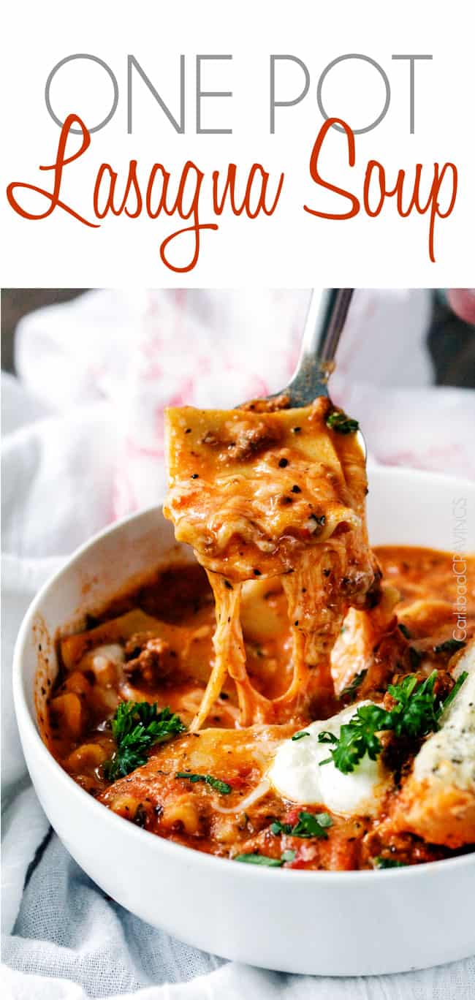

Lasagna Soup
Home

Description
This EASY Lasagna Soup tastes just like lasagna with layers of cheesy noodles
smothered in rich marinara infused with garlic, onion and Italian spices all
smothered Parmesan, mozzarella and ricotta – drool – and all you have to do
is brown your beef, dump in the ingredients and simmer away! You might never
go back to traditional lasagna again!
Ingredients
- 1 pound lean ground beef or half Italian sausage
- 1 yellow onion, diced
- 4-5 garlic cloves, minced
- 1/4 – 1/2 teaspoon red pepper flakes
- 1 24 oz. jar Prego Traditional Italian Sauce
- 8-10 cups low sodium chicken broth, divided
- 1 14 oz. can can crushed tomatoes
- 2 tablespoons tomato paste
- 2 teaspoons balsamic vinegar
- 1 1/2 teaspoons granulated sugar
- 1 tablespoon dried basil
- 1 tsp EACH dried parsley, dried oregano, salt
- 1/2 teaspoon pepper
- 1 whole bay leaf
- 10 uncooked lasagna noodles broken into approx. 1-2 inch pieces*
- 1/2 cup heavy cream,optional**
Cheese Garnish
- shredded mozzarella cheese
- freshly finely grated Parmesan cheese
- ricotta cheese
Instructions
-
Heat large Dutch oven/large soup pot over medium high heat.
Add beef and onion and cook, stirring occasionally until beef is browned.
Add garlic and red pepper flakes and saute for 30 seconds.
Drain off any excess fat.
-
Add Prego Sauce, 6 cups chicken broth, crushed tomatoes, tomato paste,
balsamic vinegar, sugar, spices and lasagna noodles. Bring to a boil
then reduce to a simmer until lasagna noodles are tender,
stirring occasionally (approximately 20-30 minutes).
-
Discard bay leaf and stir in heavy cream (optional)
and 2-4 cups chicken broth to reach desired consistency.
Garnish individual servings with desired amount of cheeses.
Notes
*I love lasagna noodles in this recipe – they are slurpilicious!
You can also replace the noodles with 2 1/2 cups uncooked small shells
if desired and simmer for less time.
**If you want to omit the heavy cream but still would like a thicker soup
then I suggest whisking 2 teaspoons cornstarch with some of the chicken broth
and adding to the soup to simmer and thicken.